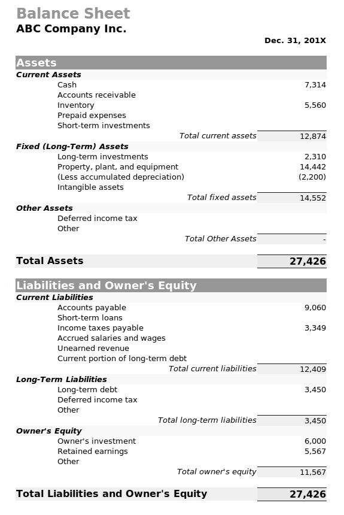
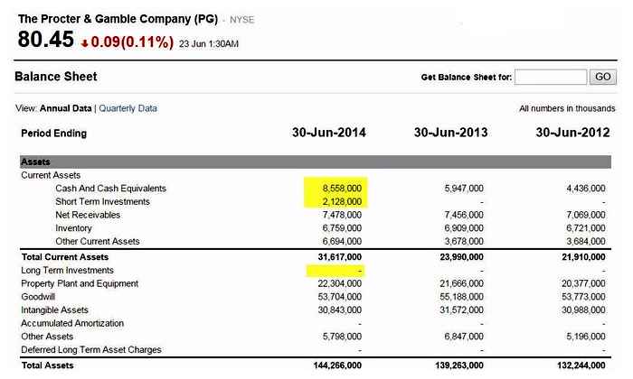
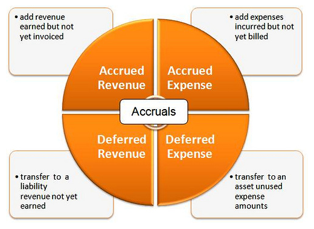
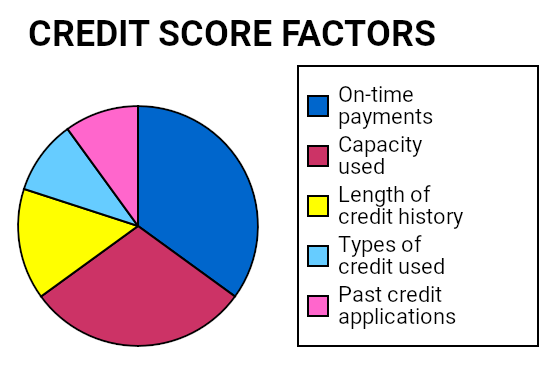
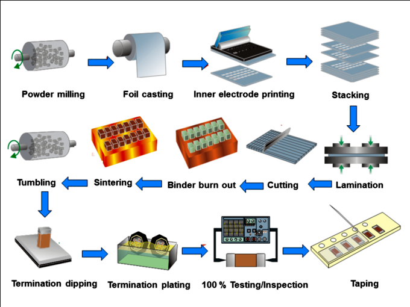
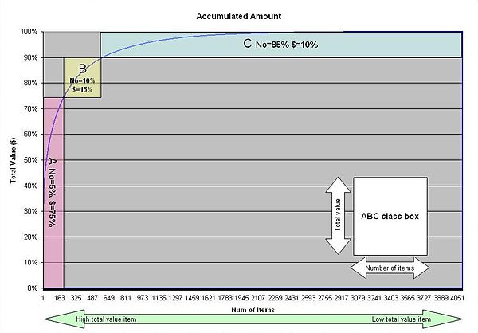
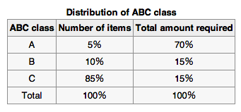
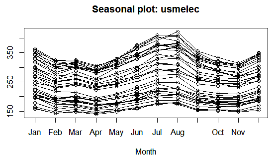
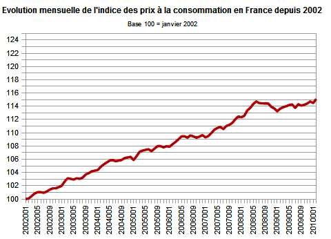
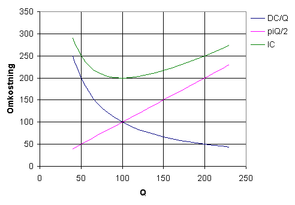

The main reason a business maintains cash on hand is to meet financial obligations.
Explain the importance for always having cash on hand
In business, economics, or investment, market liquidity is an asset's ability to be sold without causing a significant movement in the price and with minimum loss of value. Money, or cash, is the most liquid asset, and can be used immediately to perform economic actions like buying, selling, paying debt, and meeting immediate wants and needs.
In bookkeeping and accounting, cash refers to current assets comprising currency or currency equivalents that can be accessed immediately or near immediately (as in the case of money market accounts). Cash is seen as a reserve for payments and as a way to meet financial obligations. A business's cash account is how much currency it has on hand at a given time.
In banking, liquidity is the ability to meet obligations when they come due without incurring unacceptable losses. Managing liquidity is a daily process requiring bankers to monitor and project cash flows to ensure adequate liquidity is maintained. Maintaining a balance between short-term assets and short-term liabilities is critical. For an individual bank, clients' deposits are its primary liabilities (in the sense that the bank is meant to give back all client deposits on demand), whereas reserves and loans are its primary assets (in the sense that these loans are owed to the bank, not by the bank). The investment portfolio represents a smaller portion of assets, and serves as the primary source of liquidity. Investment securities can be liquidated to satisfy deposit withdrawals and increased loan demand. Banks have several additional options for generating liquidity, such as selling loans, borrowing from other banks, borrowing from a central bank, such as the U.S. Federal Reserve Bank, and raising additional capital. In a worst case scenario, depositors may demand their funds when the bank is unable to generate adequate cash without incurring substantial financial losses. In severe cases, this may result in a bank run. Most banks are subject to legally mandated requirements intended to help banks avoid a liquidity crisis.
The cash flow cycle measures how long it takes for a firm to recover cash that it invests in ongoing operations.
Define the cash flow cycle
Cash flow cycle also is called "cash conversion cycle" (CCC). In management accounting, the CCC measures how long a firm will be deprived of cash if it increases its investment in resources in order to expand customer sales. It is thus a measure of the liquidity risk entailed by growth. However, shortening the CCC creates its own risks: while a firm could even achieve a negative CCC by collecting from customers before paying suppliers, a policy of strict collections and lax payments is not always sustainable.
The cash conversion cycle refers to the time frame between a firm's cash disbursement and cash collection. However, the CCC cannot be directly observed in cash flows, because these are also influenced by investment and financing activities; it must be derived from statement of financial position or balance sheet data associated with the firm's operations.
Although the term "cash conversion cycle" technically applies to a firm in any industry, the equation is formulated to apply specifically to a retailer. Since a retailer's operations consist of buying and selling inventory, the equation models the time between the following:
The CCC must be calculated by tracing a change in cash through its effect upon receivables, inventory, payables, and finally back to cash, thus, the term cash conversion cycle, and the observation that these four accounts "articulate" with one another.
The equation describes a firm that buys and sells on account. Also, the equation is written to accommodate a firm that buys and sells on account. For a cash-only firm, the equation would only need data from sales operations (e.g., changes in inventory), because disbursing cash would be directly measurable as purchase of inventory, and collecting cash would be directly measurable as sale of inventory.
However, for a firm that buys and sells on account, Increases and decreases in inventory do not occasion cash flows but accounting vehicles (receivables and payables, respectively); increases and decreases in cash will remove these accounting vehicles (receivables and payables, respectively) from the books.
Cash flow cycle = # days between disbursing cash and collecting cash in connection with undertaking a discrete unit of operations.
Calculate a company's cash flow cycle
The cash flow cycle is also called cash conversion cycle (CCC).
CCC=# days between disbursing cash and collecting cash in connection with undertaking a discrete unit of operations.
=Inventory conversion period + Receivables conversion period – Payables conversion period
Inventory conversion period = Avg. Inventory / (COGS / 365)
Receivables conversion period = Avg. Accounts Receivable / (Credit Sales / 365)
Payables conversion period = Avg. Accounts Payable / (Purchases / 365)
There are five important intervals, referred to as conversion cycles (or conversion periods):
Knowledge of any three of these conversion cycles permits derivation of the fourth (leaving aside the operating cycle, which is just the sum of the inventory conversion period and the receivables conversion period. )
Hence, interval {C → D}=interval {A → B}+interval {B → D}–interval {A → C}
In calculating each of these three constituent conversion cycles, we use the equation TIME =LEVEL/RATE (since each interval roughly equals the TIME needed for its LEVEL to be achieved at its corresponding RATE).
We estimate its LEVEL "during the period in question" as the average of its levels in the two balance sheets that surround the period: (Lt1+Lt2)/2.
To estimate its RATE, we note that Accounts Receivable grows only when revenue is accrued; and Inventory shrinks and Accounts Payable grows by an amount equal to the COGS expense (in the long run, since COGS actually accrues sometime after the inventory delivery, when the customers acquire it).
Our aim of studying cash conversion cycle and its calculation is to change the policies relating to credit purchase and credit sales. We can change our standard of payment of credit purchase or getting cash from our debtors on the basis of reports of cash conversion cycle. If it tells good cash liquidity position, we can maintain our past credit policies. Its aim is also to study cash flow of business. Cash flow statement and cash conversion cycle study will be helpful for cash flow analysis.
The cash budget includes the beginning balance, detail on payments and receipts, and an ending balance.
Identify the different components of a cash budget
A cash budget is a prediction of future cash receipts and expenditures for a particular time period, usually in the near future. The cash flow budget helps the business determine when its income will be sufficient to cover its expenses and when the company will need to seek outside financing.
One of the assets listed is cash, which factors into the overall budget.
Float is the term used to represent duplicate money present between the time a deposit is made and when the deposit clears the bank.
Discuss how to use float to improve a company's operations
The term float is used in finance and economics to represent duplicate money present in the banking system during the time between when a deposit is made in the recipient's account and when the money is deducted from the sender's account. Float is also associated with the amount of currency available to trade - i.e., countries can manipulate the worth of their currency by restricting or expanding the amount of float available to trade. Float is most apparent in the time delay between a check being written and the funds to cover that check being deducted from the payer's account. Once the recipient, or payee, deposits the check in the corresponding account, the bank immediately credits (increases) the payee's account, assuming that the payer's bank will ultimately send the funds to cover the check. Until the payer's bank actually sends the funds, both the payer and the payee have the same money in their accounts. Once the payee's bank notifies the payer's bank of a pending check, the duplicate funds will be removed from the payer's account and the checks will be considered to have cleared the bank. In check clearing, bank float and customer float are present.
Bank float is the time it takes to clear the funds, from the time they were deposited to the time they were credited to the depositing bank. Customer float is defined as the span of time between the deposit to the time the funds are released for use by the depositor. The difference between the bank float and the customer float is called negative float. Negative float is used by the bank as the overnight investable funds. Float can cause marginal changes in the money supply. Before electronic check clearing, bad weather or communication problems often caused float to significantly increase, as the clearing of checks was delayed. Another aspect of float time is its use to defraud, commonly known as check kiting.
In cash management, float can be utilized to make use of cash on hand for as long as possible. When managing cash disbursements, a company should endeavor to increase the amount of time present in the disbursement cycle. In other words, it is appropriate to delay making payments until they come due in order to have use of available cash for as long as possible. Some methods for accomplishing this include mailing checks far away from those waiting to receive payment, disbursing checks from a remote bank, or purchasing with credit cards. Methods such as these present a company with three types of float to take advantage of:
A company must balance its need for quick cash collections with the needs and desires of its customers.
Describe the different strategies for managing a company's collections
The cash receipts cycle requires a diligent collection process. A company must balance this need for quick cash collections with the needs and desires of its customers. For example, customers who are important to a firm's business should be treated carefully as opposed to customers who mean little or nothing to its future. Therefore, collection efforts must be customer specific in order to be effective. Specific collection techniques include letters, telephone calls, faxes, emails, and legal action. An example of a collection letter follows:
Our records indicate that a balance of \$ 4,650.30 is over 90 days past due. We have sent monthly statements and reminders several times, but we have yet to receive payment or any explanation as to why payment should not be made. Please review this matter immediately. I will call you in the next five days to arrange payment.
The overall collection process should be pro-active and preventive. For example, wherever possible a company should try to collect payment immediately as products or services are delivered, i.e., receive payment in cash. This eliminates the need for invoicing and follow up collection techniques. A firm should always require deposits from customers that have a history of making late payments. It should use credit applications to weed out bad customers, and include a clause in the credit application that states all collection costs are reimbursed by the customer on delinquent accounts.
Lock box banking is a service offered to companies by commercial banks that simplifies collection and processing of account receivables. In general, a lockbox is a Post Office box that is accessible by a bank. A company may set up a lock box service with their bank for receiving customers' payments. The company's customers send their payments to the PO box, and the bank subsequently collects and processes these payments directly and deposits them to the company's account. Because the bank is making the collection, the funds that have been received are immediately deposited into the company's account without first being processed by the company's accounting system, thereby speeding up cash collection. Another benefit of the lockbox service is that a company can maintain special mailboxes in different locations around the country. A customer then sends payment to the closest lockbox.
How a company manages various disbursements and current assets can have a significant impact on its cash flows.
Identify different strategies for managing a company's disbursements
Cash payments are vitally important to manage in order to maintain a successful business.
How a company manages various disbursements and current assets can have a significant impact on its cash flows. There are several problem areas to watch out for, such as payroll, purchasing, inventories, and insurance.
Payroll is a hefty cash outflow and requires special attention. One obvious trend in payroll management is to implement a flexible work force, since the flow of work fluctuates. Outsourcing and temporary workers are often part of a flexible workforce. However, a company must retain a full-time workforce for core activities. A firm can also increase payroll float times by simply distributing payroll checks after the point when banks will clear checks.
Flexible purchasing practices can help a company maintain and generate cash flow. A company may consider renting certain items as opposed to purchasing. A manager may ask, do we really need this item, and how often will we use it? If practical, a firm can order items out of season when prices are low. Finally, a firm may consider using credit cards to make purchases since this will allow more time for making payment.
Inventories have several hidden costs that can drain cash flow. These costs include storage, insurance, spoilage, handling, taxes, and financing. A company should get rid of inventory that is not moving. Obsolete inventory should be removed immediately. A firm may also find new ways of disposing of inventory. For example, it is better to sell inventory at costs than not at all. The overall objective is to maintain inventory levels at a profitable level.
A company should make sure it does not over insure the business. A firm should purchase insurance in group packages to obtain the lowest premiums. It should start by covering the largest risks first. It should then structure as high a deductible as is affordable. A company should avoid duplication and excessive insurance and shift certain costs, such as health insurance, to the employee through higher payroll deductions. Insurance should be used to cover risks that are material but occur infrequently.
Marketable securities are an investment option for organizations with strong liquidity and some potential strategic purposes in risk aversion.
Understand the various forms of marketable securities, and their value in corporate finance
This is a broad term that encompasses investments a business may make within the securities market. The advantages of these types of securities can vary depending on the business, but generally they are valuable investments with reasonably high returns that are still easily translated into cash. It is also worth noting that these types of investments can be used to hedge various types of risks. These types of investments are reported on a balance sheet as cash and cash equivalents due to their liquidity (as well as short term investments and, in some instances, long term investments), and can provide businesses with rapid access to capital.
This image depicts a balance sheet from Proctor & Gamble, where the cash and cash equivalents, short term investments, and long term investments underline the various line items that may depict marketable securities.
Marketable securities can include a variety of business investments, most of which are easily exchanged via a public exchange. These include debt securities, equity securities, and derivatives. Each of these investment types have different degrees of risk (and respective return), as well as relatively different functions from a strategic investing point of view.
The most common types of debt securities are corporate bonds, government bonds, and money market instruments. Bonds function on fixed term contracts, generally long term, offering a fixed rate of return at an extremely low level of risk. The reason the risk is so low on these particular instruments is due to the fact that in the circumstance of a bankruptcy or default on payments on behalf of the representing organization (in commercial bonds the company who issued it, and on government bonds the government that issued it), the holder of a debt security will be among the first stakeholders paid out when assets are liquidated.
Another common instrument of investment for organizations investing in cash equivalents is common and preferred stock. Buying equity in other organizations can provide a variety of benefits, depending on the scale of the investment being made. Equity investments tend to yield higher returns (at higher risk), while also granting shareholders a percentage of ownership over the organization being invested in.
Perhaps the most interesting marketable securities (and often the highest risk) are derivatives. As the name implies, derivatives derive their value from the performance of an underlying asset. These underlying entities can be indexes, assets, interest rates, or a variety of other financial devices. The reason they can be so dangerous is due to the fact that, as derivatives of another asset, they can be subjected to an amplification of the risk the underlying asset is subjected to. The 2008 economic recessions is largely due to the irresponsible utilization of derivatives (in that case, primarily those reliant upon debts, such as home mortgages).
However, at the business level, derivatives have unique value due to the ability to hedge against various risks. Hedging is the process of purchasing derivatives counter to business risks being experienced, in order to offset any fluctuation in the external environment which may adversely effect profitability. This sounds confusing, but is actually much simpler than it seems. Let's take a couple examples:
Accounts receivable represents money owed by entities to the firm on the sale of products or services on credit.
Describe when a business can recognize revenue
Every business sells products or services to its customers. Accounts receivable represents money owed by entities to the firm on the sale of products or services on credit. In most businesses, accounts receivable is executed by generating an invoice and either mailing or electronically delivering it to the customer. In turn, the customer must pay the invoice within an established timeframe, which is called the credit terms or payment terms. The accounts receivable departments use the sales ledger, which normally records:
On a company's balance sheet, accounts receivable is the money owed to that company by entities outside of the company. The receivables owed by the company's customers are called trade receivables. Account receivables are classified as current assets assuming that they are due within one year. These are the funds management is concerned with when considering working capital requirements.
Companies have two methods available to them for measuring the net value of accounts receivable, which is generally computed by subtracting the balance of an allowance account from the accounts receivable account. The first method is the allowance method, which establishes an allowance for doubtful accounts, or bad debt provision, that has the effect of reducing the balance for accounts receivable. The amount of the bad debt provision can be computed in two ways:
The second method is the direct write-off method. It is simpler than the allowance method in that it allows for one simple entry to reduce accounts receivable to its net realizable value. The entry would consist of debiting a bad debt expense account and crediting the respective accounts receivable in the sales ledger.
A company has a choice of when to actually recognize revenue via various accounting methods. Revenue has a big impact on bottom-line profitability, so managers may be tempted to "manage" revenue recognition. Under accrual accounting, a firm can recognize revenue when it has:
Managers can sometimes tweak the period in which revenue is recognized to create a more attractive financial statement for a given circumstance .
This chart lays out methods for accruing revenue and expenses in accounting.
To establish a credit policy, a company must establish credit standards, credit terms, and a collection policy.
Analyze a potential borrower using the "Five C's of Credit"
There are three steps a company must undergo when developing a credit policy:
Management must decide on credit standards, which involves decisions on how much credit risk to assume. These decisions play a large role in determining how much money a firm ties up in its receivables. A restrictive policy will most likely result in lower sales, but the firm will have a smaller investment in receivables and incur less bad-debt losses. Less restrictive policies will generate higher sales as well as a higher receivables balance, but the company will most likely incur more bad-debt losses and a high opportunity cost of holding capital in accounts receivables.
This chart depicts the factors that go into an individual's credit score.
Another important factor in determining credit standards involves a company evaluating the credit worthiness, or credit score, of an individual or business. This refers to the risk that the buyer will default on extended credit by failing to make payments which it is obligated to do. Potential losses not only include the selling price, but can also include disruption to cash flows and increased collection costs. To reduce its risk, the seller may perform a credit check on the buyer or require the buyer to put up collateral against credit extended.
After establishing credit standards, the firm must decide on the length of the period that would be allowed before payment must be made and whether or not they will offer a discount for early payments. If a discount is offered, the amount of the discount must also be determined. There are many purposes for discounting, such as to move out-of-date stock, to reward valuable customers, as a sales promotion, or to reward behaviors that benefit the discount issuer. Some common types of discounts include:
The last step is to establish a collection policy. Collection policies vary widely among industries. Some companies do nothing when their customers don't pay. Others send out a reminder notifying customers that their payment is late. Some companies may even take legal action at the first late payment.
Terms of trade credit include the amount of time allowable for payment to be received, including any potential discounts.
Differentiate different types of transaction by the terms of trade
Credit terms are often quoted as "net X" with X being a certain number of days. An example of a common payment term is Net 30, which means that payment is due at the end of 30 days from the date the invoice is issued. Transit time is included when counting the days, i.e. a purchase in transit for 7 days before receipt has just 23 additional days until payment is due to the seller.
Other common payment terms include Net 45, Net 60 and 30 days end of month. Net 30 is a term that most business and municipalities (federal, state and local) use in the United States. Net 10 and Net 15 is widely used as well. Net 60 is less used because of its longer payment terms.
The debtor is free to pay before the due date, and some businesses offer a discount for early payment. A discount can be offered and stated as "2/10, net 30". This means that the buying firm will receive a two percent discount if it pays by the tenth day, otherwise they will pay the full amount in 30 days.
Let's consider a potential case of the operator of an ice cream stand. The operator may sign a franchising agreement, under which the distributor agrees to provide ice cream stock under the terms "Net 60" with a ten percent discount on payment within 30 days, and a 20% discount on payment within 10 days. This means that the operator has 60 days to pay the invoice in full. If sales are good within the first week, the operator may be able to send a check for all or part of the invoice, and make an extra 20% on the ice cream sold. However, if sales are slow, leading to a month of low cash flow, then the operator may decide to pay within 30 days, obtaining a 10% discount, or use the money another 30 days and pay the full invoice amount within 60 days.The ice cream distributor can do the same thing, receiving trade credit from milk and sugar suppliers on terms of Net 30, 2% discount if paid within ten days. Under this agreement, they are apparently taking a loss or disadvantageous position in this web of trade credit balances. Why would they do this? First, they have a substantial markup on the ingredients and other costs of production of the ice cream they sell to the operator. The markup is the portion of selling price added to the cost of obtaining the inventory. . In addition, it is not in the distributor's best interest for customers to go out of business due to cash flow instabilities, so its financial terms aim:
This equation shows the finding of selling price for a vendor by adding its markup to its cost.
Companies use different methods to collect their outstanding receivables, like sending out reminders or employing a collection agency.
Describe the different ways a company can analyze its collections
Collecting upon accounts receivable is the final step in the credit extension process, and arguably the most difficult. In dealing with collections, it is important for a firm to start by monitoring its accounts receivable in order to determine whether its policy is working to the best advantage of the company. Accounts receivable days and an aging schedule are the most common monitor tools used.
The accounts receivable days is the average number of days that it takes a firm to collect on its sales. By comparing this number to the number in the credit policy, a business can determine whether its policy is effective or not. The accounts receivable days is important because investors utilize this measure to evaluate a firm's credit management policy. This method does have its weaknesses. Seasonal sales patterns may cause accounts receivable days to change depending on when the calculation occurs. Therefore, management can potentially manipulate accounts receivable days to hide important information.
The other method commonly used is an aging schedule which categorizes accounts by the number of days they have been on the books. It can be constructed in one of two ways: using the number of accounts or using the dollar amount of the outstanding accounts receivable. If the percentages in the lower half of the schedule begin to increase, the firm needs to evaluate the effectiveness of its credit policy. Payment patterns provide information on the percentage of monthly sales that the firm collects each month after the sale. The payment pattern can be used to forecast the working capital needs for the business.
Another way to evaluate a credit policy is to look at the receivable turnover ratio. This is a financial ratio that measures the number of times, on average, receivables are collected during a period.
There are several methods companies can use to collect their outstanding receivables. Some do nothing, some send out reminders notifying customers of late payment, and some take legal action - sometimes at the first late payment. If firms so choose, they can utilize a collection agency. A collection agency is a business that pursues payments of debts owed by individuals or businesses. Most collection agencies operate as agents of creditors and collect debts for a fee or percentage of the total amount owed. There are many types of collection agencies. First-party agencies are oftentimes a subsidiary of the original company to whom the debt is owed. Third-party agencies are separate companies contracted by a business to collect debts on their behalf for a fee. A company may protect against bad-debts losses by purchasing trade credit insurance. This is an insurance policy and a risk management product offered by private insurance companies and governmental export credit agencies to business entities wishing to protect their accounts receivables from loss due to credit risks like protracted default, insolvency, or bankruptcy.
Most manufacturing organizations usually divide their inventory into raw materials, work in process, finished goods, and goods for sales.
Differentiate the different types of inventory based on it stage of proudction
Most manufacturing organizations usually divide their inventory into raw materials, work in process, finished goods, and goods for sales. A good purchased as a "raw material" goes into the manufacture of a product. A good only partially completed during the manufacturing process is called "work in process. " When the good is completed as to manufacturing but not yet sold or distributed to the end-user, it is called a "finished good. "
From raw materials to work in process to finished goods.
1. Raw materials: Materials and components scheduled for use in making a product.
2. Work in process, WIP: Materials and components that have began their transformation to finished goods. These items are not yet completed but either just being fabricated or waiting in a queue for further processing or in a buffer storage. The term is used in production and supply chain management. Optimal production management aims to minimize work in process. Work in process requires storage space, represents bound capital not available for investment, and carries an inherent risk of earlier expiration of shelf life of the products. A queue leading to a production step shows that the step is well buffered for shortage in supplies from preceding steps, but may also indicate insufficient capacity to process the output from these preceding steps. Just-in-time (acronym: JIT) production is a concept to reduce work in process with respect to a continuous configuration of product. Sometimes, outside of a production and construction context "work in process" is used erroneously where the status "work in progress" would be correctly used to describe more broadly work that is not yet a final product.
3. Finished goods: Goods ready for sale to customers. Finished goods is a relative term. In a supply chain management flow; the finished goods of a supplier can constitute the raw material of a buyer.
4. Goods for resale: Returned goods that are salable.
FIFO, LIFO, and average cost methods are accounting techniques used in managing inventory.
Differentiate between the different type of inventory accounting techniques
FIFO, LIFO, and average cost methods are accounting techniques used in managing inventory involving the amount of money a company has tied up within inventory of produced goods, raw materials, parts, components. These methods are used to manage assumptions of cost flows related to inventory.
FIFO stands for first-in, first-out, meaning that the oldest inventory items are recorded as sold first but do not necessarily mean that the exact oldest physical object has been tracked and sold. This expression describes the principle of a queue processing technique or servicing conflicting demands by ordering process by first come, first served (FCFS) behavior, where the persons leave the queue in the order they arrive, or waiting one's turn at a traffic control signal.
LIFO stands for last-in, first-out, meaning that the most recently produced items are recorded as sold first. Since the 1970s, some U.S. companies shifted towards the use of LIFO, which reduces their income taxes in times of inflation, but with International Financial Reporting Standards banning the use of LIFO, more companies have gone back to FIFO. LIFO is only used in Japan and the United States,
The difference between the cost of an inventory calculated under the FIFO and LIFO methods is called the LIFO reserve. This reserve is essentially the amount by which an entity's taxable income has been deferred by using the LIFO method.
Average cost method is quite straightforward. It takes the weighted average of all units available for sale during the accounting period and then uses that average cost to determine the value of COGS and ending inventory. There are two commonly used average cost methods: Simple weighted average cost method and moving average cost method.
Weighted average cost method:
It takes Cost of Goods Available for Sale and divides it by the total amount of goods from Beginning Inventory and Purchases. This gives a Weighted Average Cost per Unit. A physical count is then performed on the ending inventory to determine the amount of goods left. Finally, this amount is multiplied by Weighted Average Cost per Unit to give an estimate of ending inventory cost.
Moving average cost method:
Assume that both Beginning Inventory and beginning inventory cost are known. From them the Cost per Unit of Beginning Inventory can be calculated. During the year, multiple purchases are made. Each time, purchase costs are added to beginning inventory cost to get Cost of Current Inventory. Similarly, the number of units bought is added to beginning inventory to get Current Goods Available for Sale. After each purchase, Cost of Current Inventory is divided by Current Goods Available for Sale to get Current Cost per Unit on Goods. Also during the year, multiple sales happen. The Current Goods Available for Sale is deducted by the amount of goods sold, and the Cost of Current Inventory is deducted by the amount of goods sold times the latest (before this sale) Current Cost per Unit on Goods. This deducted amount is added to Cost of Goods Sold. At the end of the year, the last Cost per Unit on Goods, along with a physical count, is used to determine ending inventory cost.
The ABC analysis is an inventory categorization technique often used in material management wherein accuracy and control decreases from A to C.
Differentiate different types of inventory items based on ABC inventory analysis
The ABC analysis is a business term used to define an inventory categorization technique often used in material management. It is also known as "Selective Inventory Control. " Policies based on ABC analysis:
The ABC analysis provides a mechanism for identifying items that will have a significant impact on overall inventory cost, while also providing a mechanism for identifying different categories of stock that will require different management and controls.
The ABC analysis suggests that inventories of an organization are not of equal value. Thus, the inventory is grouped into three categories (A, B, and C) in order of their estimated importance.
A items are very important for an organization. Because of the high value of these A items, frequent value analysis is required. In addition to that, an organization needs to choose an appropriate order pattern (e.g., "Just- in- time") to avoid excess capacity.
B items are important, but of course less important, than A items and more important than C items. Therefore, B items are intergroup items.
C items are marginally important.
The following is an example of the Application of Weighed Operation based on ABC class in the electronics manufacturing company with 4,051 active parts.
Actual distribution of ABC class in the electronics manufacturing company with 4051 active parts.
Using this distribution of ABC class and change total number of the parts to 4,000.
Distribution of ABC class
By applying weighed control based on ABC classification, required man hours and inventory level are drastically reduced.
Seasonal trends and internal projections of consumption in certain goods can have a significant impact on opportunity cost and potential profit for an organization.
Recognize the relevance in time of year to overall demand
Many industries are subject to dips and rises and demand as a result of seasonality. Logically, sourcing the same amount of a given product each month for inventory is not a practical choice in these industries. Inventory management in seasonally impacted businesses can become quite complex, as the accuracy of inaccuracy of forecasts can have substantial impacts on overall profitability.
In an ideal world, a business would avoid the need for inventory through perfect operational management and completely accurate projections. Of course, this is impossible. As a result, business must balance risk and opportunity to ensure that inventory is available when it is needed and waste is minimized. Inventories are kept due to:
Among the many reasons to keep inventory is planning for seasonality. Businesses should first measure whether or not consumer demand and subsequent inventory requirement are subjected to predictable seasonal trends. There are a number of ways to do this utilizing existing historical sales data as well as data from external research on the industry itself. There are countless models and methods of organizing seasonal data to determine, but from the managerial frame mostly analysts preferred distribution of data should ultimately communicate the same correlations (or lack thereof) for differences in sales on a monthly basis.
Once seasonality is determined, business should measure the fluctuations from year to year and the opportunity costs of having too much or too little on hand. Once this is accomplished, the business can order the ideal amount based on data-driven projections to capture as much opportunity as possible without taking the risk of over ordering (and thus overpaying for storage).
An important aspect of seasonal inventory management is the concept of perishable goods. From food to fashion to technology, many goods simply either go bad or lose most of their value for no other reason that culture has passed it by. This is called a perishable good. Perishable goods have an even greater opportunity cost when it comes to mismanaging (and erroneously predicting) demand. If too much of a perishable good is ordered, not only will it cost the organization in unnecessary inventory fees, but also adds the risk of never been sold at all (a complete sunk cost at that point).
As a result, understanding the shelf life of a good, the risk of over or under stocking, and recognizing the ebb and flow of seasonal demand can add a great deal to the profitability of an organization.
In this chart, consumption (demand) of electricity over a twelve month time frame is illustrated over time. Higher capacities are required in certain months (in this case - August) and capacity must be expanded to take this into account.
High inflation encourages companies to keep a high level of inventories.
Explain how inflation influences inventory levels
Inflation is a rise in the general level of prices of goods and services in an economy over a period of time. When the general price level rises, each unit of currency buys fewer goods and services. Consequently, inflation also reflects an erosion in the purchasing power of money–a loss of real value in the internal medium of exchange and unit of account in the economy.
Inflation's effects on an economy are various and can be simultaneously positive and negative. Negative effects of inflation include an increase in the opportunity cost of holding money; uncertainty over future inflation which may discourage investment and savings; and if inflation is rapid enough, shortages of goods as consumers begin hoarding out of concern that prices will increase in the future. Therefore, high inflation encourages companies to keep a high level of inventories.
Inflation in France in 2002
The Nobel laureate Robert Mundell noted that moderate inflation would induce savers to substitute lending for some money holding as a means to finance future spending. That substitution would cause market clearing real interest rates to fall. Nobel laureate James Tobin noted that moderate inflation would cause businesses to substitute investment in physical capital (plant, equipment, and inventories) for money balances in their asset portfolios. That substitution would mean choosing the making of investments with lower rates of real return. (The rates of return are lower, because the investments with higher rates of return were already being made before. ) To put it in a word, companies purchase more inventories in case of high inflation. The two related effects are known as the Mundell-Tobin effect. Unless the economy is already over-investing according to models of economic growth theory, that extra investment resulting from the effect would be seen as positive.
Inventory costs depends on methods used, which include Specific Identification, Weighted Average Cost, Moving-Average Cost, FIFO, and LIFO.
Identify the different types of assumptions a company can make when valuing its inventory
Inventory management is primarily about specifying the shape and percentage of stocked goods. It is required at different locations within a facility or within many locations of a supply network to precede the regular and planned course of production and stock of materials.
Inventory management involves a retailer seeking to acquire and maintain a proper merchandise assortment while ordering, shipping, handling, and related costs are kept in check. It also involves systems and processes that identify inventory requirements, set targets, provide replenishment techniques, report actual and projected inventory status, and handle all functions related to the tracking and management of material. This would include the monitoring of material moved into and out of stockroom locations and the reconciling of the inventory balances. It also may include ABC analysis, lot tracking, cycle counting support, etc. Management of the inventories, with the primary objective of determining/controlling stock levels within the physical distribution system, functions to balance the need for product availability against the need for minimizing stock holding and handling costs. The inventory costs depend on which method is used.
There are, in fact, so many things that can vary hidden under this appearance of simplicity that a variety of 'adjusting' assumptions may be used. These include:
Specific identification is a method of finding out ending inventory cost. It requires a detailed physical count, so that the company knows exactly how many of each goods brought on specific dates remained at the yearend inventory. When this information is found, the amount of goods is multiplied by their purchase cost at their purchase date, to get a number for the ending inventory cost.
This method is also a very hard to use on interchangeable goods. For example, it is hard to relate shipping and storage costs to a specific inventory item. These number will need to be estimated, therefore reducing the specific identification's benefit of being extremely specific.
Weighted Average Cost is a method of calculating Ending Inventory cost. It is also known as AVCO. It takes Cost of Goods Available for Sale and divides it by the total amount of goods from Beginning Inventory and Purchases. This gives a Weighted Average Cost per Unit. A physical count is then performed on the ending inventory to determine the amount of goods left. Finally, this amount is multiplied by Weighted Average Cost per Unit to give an estimate of ending inventory cost.
Moving-Average (Unit) Cost is a method of calculating Ending Inventory cost. Assume that both Beginning Inventory and beginning inventory cost are known. From them the Cost per Unit of Beginning Inventory can be calculated. During the year, multiple purchases are made. Each time, purchase costs are added to beginning inventory cost to get Cost of Current Inventory. Similarly, the number of units bought is added to beginning inventory to get Current Goods Available for Sale. After each purchase, Cost of Current Inventory is divided by Current Goods Available for Sale to get Current Cost per Unit on Goods.
Also during the year, multiple sales happen. The Current Goods Available for Sale is deducted by the amount of goods sold. The Cost of Current Inventory is deducted by the amount of goods sold times the latest (before this sale) Current Cost per Unit on Goods. This deducted amount is added to Cost of Goods Sold.
At the end of the year, the last Cost per Unit on Goods, along with a physical count, is used to determine ending inventory cost.
FIFO stands for first-in, first-out, meaning that the oldest inventory items are recorded as sold first, but do not necessarily mean that the exact oldest physical object has been tracked and sold.
LIFO stands for last-in, first-out, meaning that the most recently produced items are recorded as sold first. Since the 1970's, some U.S. companies shifted towards the use of LIFO, which reduces their income taxes in times of inflation. However, with International Financial Reporting Standards banning the use of LIFO, more companies have gone back to FIFO. LIFO is only used in Japan and the U.S.
The difference between the cost of an inventory calculated under the FIFO and LIFO methods is called the LIFO reserve. This reserve is essentially the amount by which an entity's taxable income has been deferred by using the LIFO method.
Economic order quantity is the order quantity that minimizes total inventory holding costs and ordering costs: ${ Q }^{ * }=\left( \frac { 2DS }{ H } \right) ^{ \frac { 1 }{ 2 } }$ .
Calculate a company's optimal order quantity
Economic order quantity is the order quantity that minimizes total inventory holding costs and ordering costs. It is one of the oldest classical production scheduling models. The framework used to determine this order quantity is also known as "Barabas EOQ Model" or "Barabas Formula. " The model was developed by Ford W. Harris in 1913, but R. H. Wilson, a consultant who applied it extensively, is given credit for his in-depth analysis.
We want to determine the optimal number of units to order so that we minimize the total cost associated with the purchase, delivery, and storage of the product. The required parameters to the solution are the total demand for the year, the purchase cost for each item, the fixed cost to place the order, and the storage cost for each item per year. Note that the number of times an order is placed will also affect the total cost, though this number can be determined from the other parameters.
Underlying assumptions are:
Variables for the function are: Q = order quantity, Q*= optimal order quantity, D = annual demand quantity, S = fixed cost per order (not per unit, typically cost of ordering and shipping and handling. This is not the cost of goods), H = annual holding cost per unit (also known as carrying cost or storage cost) (warehouse space, refrigeration, insurance, etc., usually not related to the unit cost).
The single-item EOQ formula finds the minimum point of the following cost function:
Economic order quantity function solving for Q.
Total Cost = purchase cost + ordering cost + holding cost
To determine the minimum point of the total cost curve, partially differentiate the total cost with respect to Q (assume all other variables are constant) and set to 0:
Equation to determine the minimum point of the total cost curve.
Solving for Q gives Q* (the optimal order quantity):
Equation solving for Q*
Just in time (JIT) is a production strategy that strives to reduce in-process inventory and carrying costs in a manufacturing system.
Discuss the benefits and disadvantages of using a Just-In-Time (JIT) inventory system
Just in time (JIT) is a production strategy striving to improve a business return on investment by reducing in-process inventory and associated carrying costs. To meet JIT objectives, the process relies on signals or Kanban between different points in the process. Kanban are usually "tickets" but can be simple visual signals, like the presence or absence of a part on a shelf. Implemented correctly, JIT focuses on continuous improvement and can improve a manufacturing organization's return on investment, quality and efficiency. To achieve continuous improvement, key areas of focus are:
Noticing that stock depletion requires personnel to order new stock is critical to the inventory reduction at the center of JIT. But JIT relies on other elements in the inventory chain. Therefore, JIT is best implemented as one part of an overall lean manufacturing system.
Just-in-time operation can leave suppliers and downstream consumers open to supply shocks and large supply or demand changes. In addition, very low stock levels means shipments of the same part can come in several times per day. This means firms favoring JIT are especially susceptible to flow interruption.
Improved inventory management can lead to increased revenue, lower handling and holding costs, and improved cash flows.
Discuss the benefits of inventory management
Inventory management is primarily about specifying the shape and percentage of stocked goods. It is required at different locations within a facility or within many locations of a supply network to precede the regular and planned course of production and stock of materials.
The intent of inventory management is to continuously hold optimal inventory levels. The scope of inventory management concerns the fine lines between replenishment lead time, carrying costs of inventory, asset management, inventory forecasting, inventory valuation, inventory visibility, future inventory price forecasting, physical inventory, available physical space for inventory, quality management, replenishment, returns and defective goods, and demand forecasting. Balancing these competing requirements leads to optimal inventory levels, which is an on-going process as the business needs shift and react to the wider environment.
Management of the inventories, with the primary objective of determining/controlling stock levels within the physical distribution system, functions to balance the need for product availability against the need for minimizing stock holding and handling costs. Inventory management involves systems and processes that identify inventory requirements, set targets, provide replenishment techniques, report actual and projected inventory status, and handle all functions related to the tracking and management of material. This would include the monitoring of material moved into and out of stockroom locations and the reconciling of the inventory balances. It also may include ABC analysis, lot tracking, cycle counting support, etc. All of these practices leads to optimal product storage, helping minimize holding and handling costs.
Inventory management also can help companies improve cash flows. Companies with effective inventory management do not have to spend large capital balances for purchasing enormous amounts of inventory at once. This also saves handling and holding costs.
Excessive inventory means idle funds which earn no profits; inadequate inventory means lost sales.
Discuss the difficulties of managing inventory
Inventory management is primarily about specifying the size and placement of stocked goods. Inventory management is required at different locations within a facility or within multiple locations of a supply network to protect the regular and planned course of production against the random disturbance of running out of materials or goods.
The scope of inventory management also concerns the fine lines between replenishment lead time, carrying costs of inventory, asset management, inventory forecasting, inventory valuation, inventory visibility, future inventory price forecasting, physical inventory, available physical space for inventory, quality management, replenishment, returns, and defective goods and demand forecasting. Balancing these competing requirements leads to optimal inventory levels, which is an on-going process as the business needs shift and react to the wider environment.
Inventory control - inventory cost elements (holding cost, order cost, total)Parameters: Order-cost (C) 10, demand (D) 1000, holding cost (i) 20% (of price), price (p) 10 => EOQ = 100
Excessive inventory means the firm has idle funds which earn no profits for the firm. In addition, excessive inventory incurs extra handling costs and holding costs. However, it is not well advised for the firm to keep low inventory levels, since inadequate inventory means the firm does not have sufficient raw materials for production. When items are required on a breakdown basis and find out that there is not enough stock as a result of reducing it, this could lead to loss of production. Inadequate inventory also means not ample goods to sell. The company, as a result, faces the risk of losing customers to competitors.
Inventory management will be more complicated as moderate inflation and seasonality gets involved. Inflation encourages the firm to purchase more inventory, exposing them to excessive inventory. Without an accurate sales forecast, companies operating in sectors affected by seasonality face shortage during high time and excess of inventory during low time of the year.
{kind=link}
{kind=link}
{kind=link}
{kind=link}
{kind=link}
{kind=link}
{kind=link}
{kind=link}
{kind=link}
{kind=link}
{kind=link}